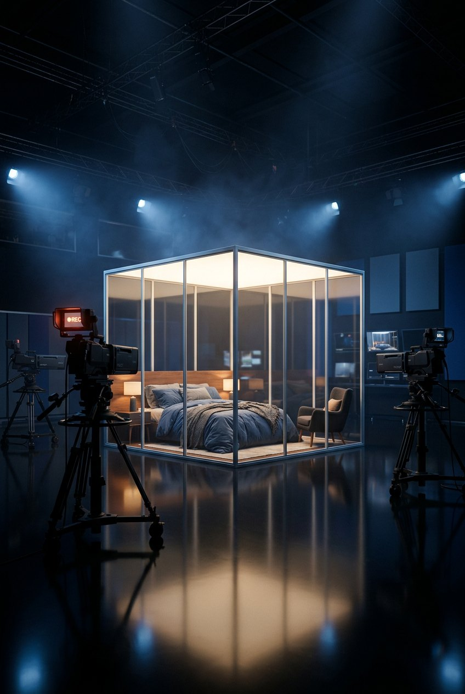
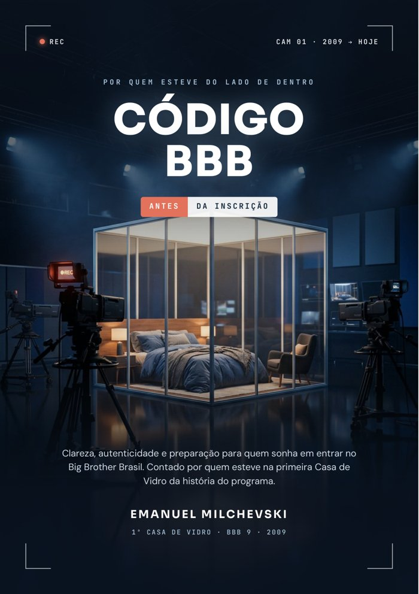
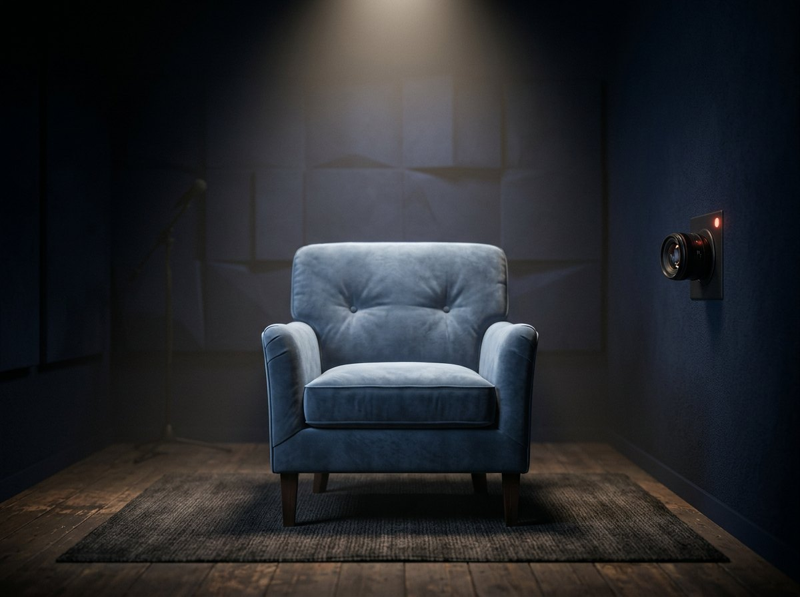

Em 2009, eu fui um dos quatro desconhecidos colocados na primeira Casa de Vidro da história do BBB. O Brasil votou e eu entrei. Neste ebook, eu te ajudo a se preparar com clareza e autenticidade, e te conto o que existe do lado de dentro.
Quero o Código BBB
"O jogo não começa quando você entra na casa. Começa quando você decide se preparar."
Você acompanha o programa há anos e quer entender se está pronto para isso.
E quer olhar com honestidade para o que dá para melhorar, sem se culpar.
O vídeo está na cabeça, mas nunca sai do papel.
Ou acaba tentando adivinhar o que querem ver e soa artificial.
E quer se preparar para o que pode vir em 2027 e depois.
A pressão, o confinamento e o que o público aceita ou não.

CONFESSIONÁRIOou parcelado no cartão · Pix · acesso imediato por e-mail
Garantia de 7 dias: se não fizer sentido para você, peça o reembolso pela própria plataforma.
Não. Ninguém pode garantir isso. Os critérios e as decisões da produção não são públicos. O ebook te ajuda a se preparar com mais clareza, autenticidade e cuidado emocional.
Logo após a confirmação do pagamento, você recebe o PDF por e-mail e pode ler no celular, no tablet ou no computador.
Sim. A segunda parte do livro mostra o que acontece do lado de dentro: confinamento, público, paredão, provas e liderança.
Não. É um material independente, escrito por um ex-participante, sem patrocínio ou aprovação da emissora.
Sim. Ao final do livro você encontra como falar comigo sobre a mentoria individual, para olhar de forma personalizada para a sua história.